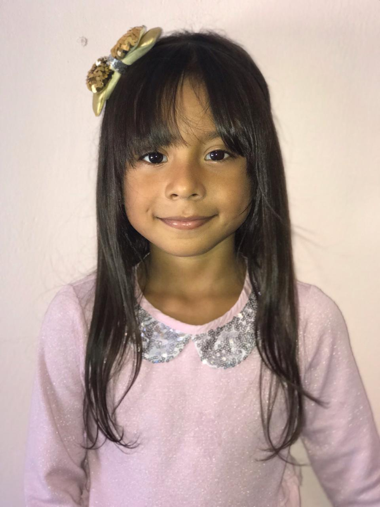
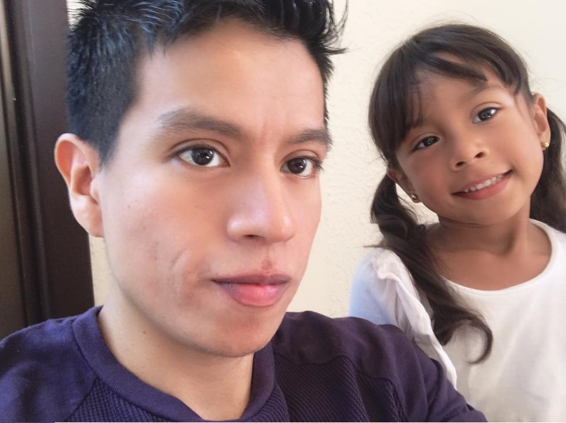
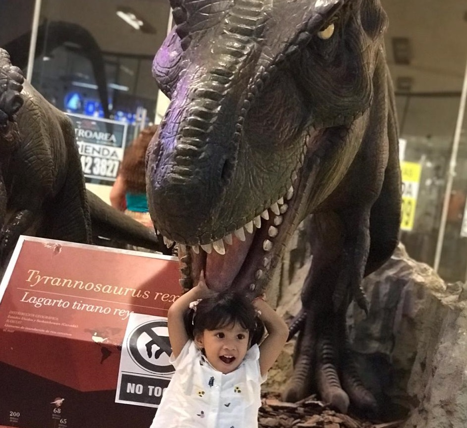
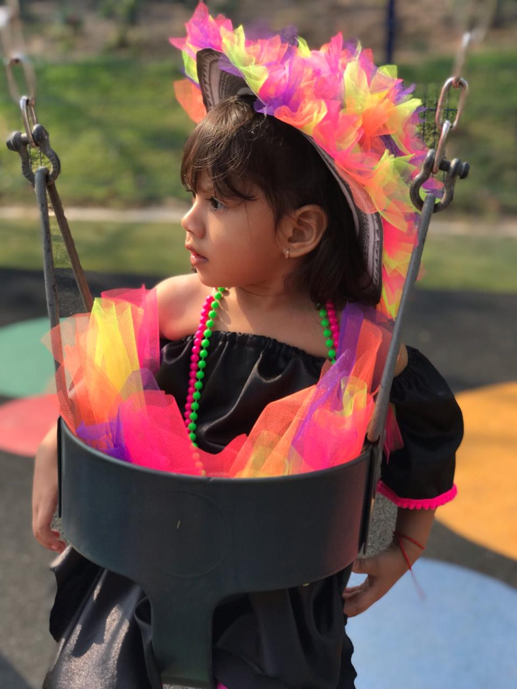

Kaitlyn Haley — Kai
Curiosa, valiente y protectora. La primera en preguntar “¿por qué?” y la última en rendirse.
Un compendio de pequeñas cartas y fotografías que pensamos dejar a través de los años. Para Kaitlyn y Celeste, como un recordatorio de cuánto las amamos.


Curiosa, valiente y protectora. La primera en preguntar “¿por qué?” y la última en rendirse.

Alegría pura y ocurrencias sin fin. Su risa es la banda sonora de la casa.
Hagan siempre lo que desde el corazón les apasione. El trabajo se enriquece y la vida se aligera cuando hacemos lo que amamos.
Arriésguense, siempre inténtenlo, tomen decisiones, y si alguna vez llegasen a fallar: vuelvan a arriesgarse.
“Los amigos pasan, los amores caducan, pero su familia siempre estará a su lado.”
Cuestionen todo, cuestiónenme a mí. No den nada por dicho. Siempre defiendan sus ideales con la frente alta.
Vivan su vida plenamente, conozcan, viajen, enamórense, cometan errores y solo lleguen a asentarse cuando hayan visto suficiente.
En redacción…
Pronto aquí.








“Prepárense, nunca paren de aprender. Para que cuando las oportunidades lleguen, estén listas.”
▶ Ver el video